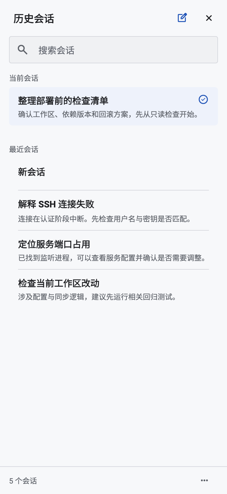

<!doctype html><meta charset="utf-8"><title>历史会话 · Apple 方向视觉评审</title><style>body{margin:0;background:#e8ecf1;color:#1c2532;font:16px -apple-system,sans-serif}main{width:980px;margin:auto;padding:24px}h1{font-size:25px;margin:0 0 10px}p{color:#536174;line-height:1.5}.pair{display:flex;gap:24px}.pane{width:478px}h2{font-size:17px}.image{position:relative}.image img{width:100%;display:block}.box{position:absolute;border:2px solid #c14e12;box-sizing:border-box;border-radius:6px}.box b{position:absolute;left:-13px;top:-13px;background:#b7410a;border:2px solid white;color:white;border-radius:50%;width:26px;height:26px;text-align:center;line-height:26px}.notes{display:grid;grid-template-columns:1fr 1fr;gap:12px;margin:24px 0}.notes div{background:white;padding:14px;line-height:1.6;border-left:3px solid #c14e12}a{color:#2459ad}footer{font-size:13px;color:#536174;line-height:1.6}</style><main><p><strong>历史设计归档（2026-11-01）</strong> · 不代表当前产品验收。<a href="../20261101-archive.html">查看归档说明</a></p><h1>历史会话：重新按 Apple 平台习惯组织</h1><p>左：当前实现　右：待评审视觉概念（尚未实现）</p><div class="pair"><section class="pane"><h2>当前实现</h2><div class="image"></div></section><section class="pane"><h2>新视觉方向</h2><div class="image"><div class="box" style="left:3%;top:4%;width:94%;height:7%"><b>1</b></div><div class="box" style="left:4%;top:22%;width:92%;height:10%"><b>2</b></div><div class="box" style="left:4%;top:37%;width:92%;height:35%"><b>3</b></div><div class="box" style="left:30%;top:89%;width:40%;height:7%"><b>4</b></div></div></section></div><div class="notes"><div><strong>1 · 导航归位</strong><br>居中小标题；管理与关闭留在工具栏，新建单独放置。</div><div><strong>2 · 当前会话</strong><br>白色分组与轻量勾选；取消整块蓝底和圈形选中标记。</div><div><strong>3 · 最近会话</strong><br>统一白色分组列表；不再让每行散落在灰色平面。摘要收为一行。</div><div><strong>4 · 新建入口</strong><br>删除常驻计数底栏，改为独立胶囊操作。具体位置待你确认。</div></div><footer>这是 Image Gen 视觉概念，不是模拟器截图；字号与布局参数最终需要实现后在模拟器验收。本轮没有修改应用代码或操作手机。<br>我与 DeepSeek 已讨论 2 轮。Apple HIG 支持列表易扫描、选择反馈清楚和搜索范围明确；具体分组、尺寸与按钮位置是我们的设计选择。<br><a href="history-concept.png">查看完整视觉稿</a> · <a href="round-1.txt">讨论第 1 轮</a> · <a href="round-2.txt">讨论第 2 轮</a> · <a href="https://developer.apple.com/design/human-interface-guidelines/lists-and-tables">Apple 列表规范</a></footer></main>